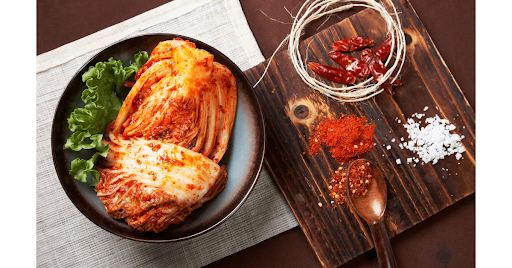

Kimchi for Every Diet: Vegan, Gluten-Free & Low-Sodium Recipes (Miami-Friendly!)
Introduction: Kimchi’s Universal Appeal
Kimchi isn’t just a Korean staple—it’s a global superfood that adapts to every diet. Whether you’re vegan, gluten-free, or watching your sodium, Miami Kimchi makes it easy to enjoy this probiotic powerhouse! At Miami Kimchi , we’re passionate about inclusivity, crafting kimchi with fresh, affordable ingredients sourced from local Florida farms. Our mission? To ensure everyone in Miami can savor kimchi’s bold flavors and gut-health perks.
In this guide, we’ll dive into three dietary adaptations: vegan, gluten-free, and low-sodium. You’ll find detailed recipes, local ingredient tips, and ready-made options tailored for you. Curious why kimchi’s a must-have for your wellness routine? Check out our Health Benefits of Kimchi blog for the full scoop!
Why Traditional Kimchi Might Not Fit Your Diet
Kimchi has deep roots in Korean culture, traditionally made with Napa cabbage, daikon radish, garlic, ginger, and gochugaru (Korean chili flakes). But classic recipes often include ingredients like fish sauce, salted shrimp, or soy sauce that don’t suit every diet.
For vegans, fish-derived components are a dealbreaker. Gluten-free folks face challenges with wheat-laden soy sauce. And if you’re cutting sodium, the hefty salt used in fermentation can be an issue. The good news? With smart swaps, you can enjoy kimchi’s tangy goodness without compromise. Let’s explore how!
Vegan Kimchi: Plant-Powered Fermentation
The Secret to Umami Without Fish
Traditional kimchi leans on fish sauce or salted shrimp for its signature umami. Going vegan doesn’t mean sacrificing that depth! Swap in plant-based powerhouses like kelp powder for a briny kick, white miso paste for fermented richness, or dried shiitake mushrooms for earthy savoriness. Miami Kimchi’s organic dried shiitake, available at our stores, is a game-changer.
Local Tip: Our Miami locations carry vegan-friendly gochugaru—Korean chili flakes with no hidden animal ingredients. Stock up for authentic flavor!
Easy Vegan Kimchi Recipe
This recipe is beginner-friendly yet packed with bold taste. Here’s how to make it:
Ingredients:
- 1 head Napa cabbage (about 2 lbs), quartered and chopped into 2-inch pieces
- 1 daikon radish (8 oz), julienned
- 2 tbsp Miami Kimchi’s vegan gochugaru
- 2 tbsp kelp broth (replaces fish sauce)
- 1 tbsp white miso paste
- 3 cloves garlic, minced
- 1-inch ginger, grated
- 2 green onions, chopped
Steps:
- Prep the Cabbage: In a large bowl, sprinkle cabbage with 1/4 cup kosher salt evenly. Let it sit for 2 hours, tossing every 30 minutes to draw out moisture consistently. This softens the cabbage and preps it for fermentation naturally.
- Rinse: Rinse the cabbage under cold running water 3 times to remove excess salt thoroughly. Drain well in a colander. Too much salt can overpower the delicate vegan flavors, so be diligent here.
- Make the Paste: In a small mixing bowl, whisk kelp broth, miso, garlic, ginger, and gochugaru until smooth and cohesive. This paste is the heart of your kimchi’s flavor profile—don’t rush it!
- Mix: Combine cabbage, daikon, and green onions in a large bowl carefully. Add the paste and toss until evenly coated—wear gloves if you’re sensitive to spice to avoid irritation!
- Ferment: Pack the mixture tightly into a clean glass jar, leaving 1 inch of headspace at the top. Seal securely and ferment at room temperature (65-75°F) for 2-3 days. Taste daily; it’s ready when tangy and slightly fizzy to your liking.
For a deeper dive into fermentation, see our How to Make Authentic Kimchi at Home guide.
Short on time? Grab our Vegan Harvest Kimchi at Miami Kimchi’s Palmetto Bay location !
Gluten-Free Kimchi: Safe for Sensitive Stomachs

Avoiding Hidden Gluten
Gluten hides in unexpected places in traditional kimchi, like soy sauce (often wheat-based) and premade chili pastes. For a gluten-free version, swap soy sauce with tamari or coconut aminos—both naturally wheat-free and available at Miami Kimchi’s Pembroke Pines store . Premade gochujang can also be tricky, so opt for certified gluten-free brands.
Expert Tip: Always double-check labels on store-bought kimchi. Ours are proudly gluten-free certified!
Gluten-Free Kimchi Recipe
Here’s a foolproof recipe for gluten-sensitive kimchi lovers:
Ingredients:
- 1 head Napa cabbage (2 lbs), chopped
- 1 daikon radish (8 oz), thinly sliced
- 2 tbsp gluten-free gochujang (we stock Chung Jung One at our stores)
- 2 tbsp tamari (or coconut aminos)
- 3 cloves garlic, minced
- 1-inch ginger, grated
Steps:
- Salt the Cabbage: Sprinkle cabbage with 1/4 cup kosher salt evenly across all pieces. Let it sit for 2 hours, tossing occasionally to draw out water consistently and soften it.
- Rinse Well: Wash off salt under cold running water thoroughly, then drain completely in a colander. This prevents the kimchi from becoming too salty and unbalanced.
- Prepare Paste: Mix gochujang, tamari, garlic, and ginger in a bowl until blended smoothly. This paste should be thick, aromatic, and vibrant—stir well!
- Combine: Toss cabbage and daikon with the paste until fully coated evenly throughout. Ensure every piece is covered for even flavor distribution across the batch.
- Ferment: Pack tightly into a jar, leaving 1 inch at the top for expansion. Ferment at room temp for 2-3 days, tasting for tanginess to suit your preference.
Flavor Boost: Add a pinch of sugar or 1 tsp rice vinegar for a brighter, more complex taste.
Chung Jung One’s gluten-free gochujang is a staff favorite at Pembroke Pines .
Low-Sodium Kimchi: Flavor Without the Salt
Balancing Fermentation & Health
Salt is kimchi’s fermentation MVP—it draws out water and fosters good bacteria. But for low-sodium diets, less is more. Cut salt by 50%, and you’ll need a shorter fermentation time (1-2 days) to avoid overgrowth. Himalayan pink salt, with its mild flavor and trace minerals, is a smart swap. Low-sodium tamari works too.
Science Lite: Less salt means less water extracted, so flavors intensify faster—perfect for quick batches!
Low-Sodium Kimchi Recipe
This recipe keeps sodium in check without skimping on taste:
Ingredients:
- 1 head Napa cabbage (2 lbs), chopped
- 1 daikon radish (8 oz), julienned
- 1 tbsp Himalayan pink salt (half the usual amount)
- 4 cloves garlic, minced
- 1-inch ginger, grated
- 2 tbsp low-sodium tamari
Steps:
- Light Brining: Sprinkle cabbage with 1 tbsp Himalayan salt evenly over all leaves. Let it sit for 2 hours, tossing midway to soften it with minimal salt usage.
- Rinse: Wash off salt thoroughly under cold water, then drain well in a colander. Excess salt can make the kimchi too salty for low-sodium diets—rinse carefully!
- Flavor Paste: Mix garlic, ginger, and tamari into a paste—no extra salt needed here! This paste relies on aromatics for depth and should be well-blended.
- Toss: Combine veggies with paste, ensuring even coverage across every piece. The paste should cling to all surfaces for balanced flavor without salt.
- Ferment: Pack tightly into a jar and ferment for 1-2 days at room temp, checking daily. Refrigerate once it’s tangy to stop fermentation at the right point.
Storage Tip: Low-sodium kimchi lasts about 10 days in the fridge. Check our How to Store Kimchi for Freshness guide for more.
Pro Tip: Double the garlic and ginger to amp up flavor without adding sodium.
Where to Find Dietary-Friendly Kimchi Ingredients in Miami
Miami’s vibrant food scene makes sourcing diet-friendly ingredients a breeze with Miami Kimchi:
- Vegan: Snag kelp broth, organic miso, and vegan gochugaru at our Hollywood location .
- Gluten-Free: Find tamari, coconut aminos, and gluten-free gochujang at Pembroke Pines .
- Low-Sodium: Pick up Himalayan pink salt and fresh radishes at Palmetto Bay .
Bonus: Chat with our staff—they’re kimchi pros eager to share personalized picks!
Miami Kimchi’s Ready-Made Solutions
No time to DIY? We’ve got you covered:
- Vegan Kimchi Jar: Made with local Florida farm ingredients—pure plant-based perfection.
- Gluten-Free Gochujang: A spicy staple, featured this month at all stores.
- Low-Sodium Batch: Seasonal and limited—call ahead to reserve yours.
Skip the prep and snag our diet-friendly kimchi at Coral Springs today!
FAQs: Kimchi for Special Diets
-
Is all kimchi vegan?
No, traditional kimchi often contains fish sauce or shrimp, but Miami Kimchi labels vegan options clearly so you can choose with confidence and ease every time.
-
Can I freeze low-sodium kimchi?
Yes, freezing is possible, but the texture may soften slightly over time. For best results, follow our storage guide to maintain freshness consistently.
-
Do you deliver diet-specific kimchi in South Florida?
Yes! We offer online ordering with delivery to Coral Springs, Pembroke Pines, and other South Florida areas promptly—check our site for details!
-
How long does homemade kimchi last?
Vegan and gluten-free kimchi can last up to 3 months in the fridge if stored properly, while low-sodium versions are best consumed within 10 days for optimal taste.
-
Can I use regular chili flakes instead of gochugaru?
You can, but gochugaru’s unique smoky-sweet profile is what gives kimchi its authentic taste—substitutes may alter the flavor significantly, so we recommend it.
-
Can I make kimchi with other vegetables?
Absolutely! Feel free to experiment with carrots, cucumbers, or kale for a creative twist on traditional kimchi that suits your palate perfectly—have fun with it!
-
Is kimchi safe for food allergies?
Our diet-specific kimchi options are crafted to avoid common allergens carefully—always check labels or ask our staff for detailed info to ensure safety.
-
How do I know when my kimchi is ready?
Taste it daily during fermentation—when it’s tangy and slightly fizzy to your liking, it’s ready to enjoy. See our fermentation guide for extra tips and tricks!
Conclusion: Kimchi is for Everyone
At Miami Kimchi, we’re all about making kimchi accessible to all—no compromises. Whether you’re vegan, gluten-free, or sodium-conscious, our recipes and ready-made jars bring this superfood to your table. Swing by our stores for fresh ingredients or grab a jar today. Your gut and taste buds will thank you!
Visit Miami Kimchi’s website to find a location and score a holiday discount on your first purchase!
< Older Post
Newer Post >
Shop these ingredients at Kimchi Mart
Six stores across South Florida — or order online and pick up in an hour.